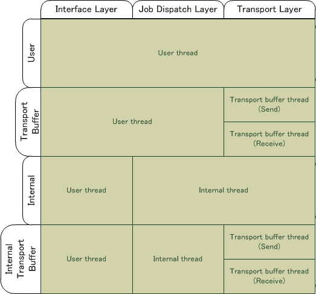

4. Initialization Settings (Thread Models, Exclusive Control, Log Output)
This section describes the NEX initialization settings.
4.1. Threading Model
NEX provides flexibility in choosing a threading model based on your game's specifications.
NEX is designed to perform internal processing and send and receive packets by periodically executing the Scheduler::Dispatch() function. Considering performance and usability, we recommend using Core::ThreadModeSafeTransportBuffer.
4.1.1. Setting the Thread Mode
4.1.1.1. Recommended Settings
We recommend the following NEX settings and API function usage. This setting balances performance and usability. Using separate threads for sending and receiving reduces the block time; the NEX API is also called in a thread-safe state, and this makes it easier to develop applications. This setting is recommended unless there is a particular reason to use a different setting.
- Thread Settings
Core::SetThreadMode(Core::ThreadModeSafeTransportBuffer)- This mode only sends and receives packets with long block times in a separate thread.
- NEX usage
- The NEX API can be called simultaneously from multiple threads.
- Use a thread-safe memory allocator when calling it from multiple threads simultaneously.
- The application calls the
Scheduler::Dispatch()orScheduler::DispatchAll()function at the beginning and end of the game frame.
Note:
Because operating system processes for sending and receiving packets block for several milliseconds due to waiting for I/O processes, the processing for sending and receiving packets through the operating system API is handled in separate threads to lessen the affect of extended blocking inside Scheduler::Dispatch(). Under NEX, such threads are called transport buffer threads.
The transport buffer thread never manipulates memory because NEX allocates the memory that the thread requires before starting it. Also, NEX and the transport buffer thread are exclusive of each other regardless of the thread mode.
If you want to further reduce the CPU load, consider using Core::ThreadModeUnsafeTransportBuffer. To automatically call Scheduler::Dispatch() or Scheduler::DispatchAll(), consider using Core::ThreadModeInternalTransportBuffer.
4.1.1.2. Thread Modes
The Core::SetThreadMode() function provides an easy way to set the thread mode for the NEX library.
-
This value is the default. It works the same as
Core::ThreadModeInternal. Core::ThreadModeUnsafeTransportBufferThe application must periodically execute the
Scheduler::Dispatch()function. The transport buffer thread starts.The CPU load is low because exclusive control (
CriticalSection) inside NEX, other than that with the transport buffer thread, is disabled. You must either use all NEX API functions from the same thread or locking in the application, as appropriate. If the NEX API was not called correctly in parallel, the system will detect this internally, and stop the process with an assertion failure. A high-speed memory allocator that is not thread-safe can be used.Core::ThreadModeSafeTransportBufferThe application must periodically execute the
Scheduler::Dispatch()function. The transport buffer thread starts.The CPU load is higher because exclusive control (
CriticalSection) inside NEX is enabled.-
The application must periodically execute the
Scheduler::Dispatch()function. The socket calls made in theScheduler::Dispatch()function can block for several milliseconds, so call this function from a thread other than the main thread.The CPU load is low because exclusive control (
CriticalSection) inside NEX is disabled. You must either use all NEX API functions from the same thread or locking in the application, as appropriate. If the NEX API was not called correctly in parallel, the system will detect this internally, and stop the process with an assertion failure. A high-speed memory allocator that is not thread-safe can be used. -
Dispatching and communication processes are both handled automatically by threads inside the library. The application does not need to call the
Scheduler::Dispatch()function. The CPU load is higher because exclusive control (CriticalSection) inside NEX is enabled. A thread-safe memory allocator must be used. NEX callbacks are called from the thread from which the NEX API function was called or from an internal thread in the library. To prevent competitions with the internal threads, exclusive processes obtained using theScheduler::SystemLock()function must be used as appropriate in the application. Depending on when the application calls NEX API functions, those function calls may get caught in exclusive control during socket API function calls and block for an extended time. To avoid this problem, useCore::ThreadModeInternalTransportBuffer. Core::ThreadModeInternalTransportBufferDispatching and communication processes are both handled automatically by threads inside the library. The application does not need to call the
Scheduler::Dispatch()function. The CPU load is higher because exclusive control (CriticalSection) inside NEX is enabled. A thread-safe memory allocator must be used. NEX callbacks are called from the thread from which the NEX API function was called or from an internal thread in the library. To prevent competitions with the internal threads, exclusive processes obtained using theScheduler::SystemLock()function must be used as appropriate in the application. The transport buffer thread starts.
4.1.1.3. Thread Mode Comparison and Thread Types
| Thread Mode | Transport Buffer Threads | Internal Threads | Thread-Safe | Memory Allocator That Is Not Thread-Safe Allowed |
|---|---|---|---|---|
| Core:: |
○ | × | × | ○ |
| Core:: |
○ | × | ○ | △ |
| Core:: |
× | × | × | ○ |
| Core:: |
× | ○ | ○ | × |
| Core:: |
○ | ○ | ○ | × |
In NEX, main threads can be classified as one of the following thread types.
Transport Buffer Threads
Threads created internally in NEX. Sends and receives packets. Total of two threads: one for sending and one for receiving. Enabling this threading mode reduces how long NEX API functions block.
Internal Threads
Threads created internally in NEX. These threads call the
Scheduler::Dispatch()function periodically to advance internal NEX processes. Enabling this threading mode removes the need to call theScheduler::Dispatch()function from the application. Use theScheduler::SetInternalThreadDispatchInterval()function to change the interval at which theScheduler::Dispatch()function is called.User Threads
Threads managed by the application while making NEX function calls are known as user threads.
The type of threads used when NEX makes a callback to the application differ depending on the threading mode. In thread modes that use internal threads, use callbacks that use internal threads. With threading modes that do not use internal threads, callbacks are made from a user thread.
The property of being thread-safe refers to whether a NEX API function can simultaneously be called on multiple different threads. This property affects whether the CriticalSection class is enabled or disabled. In thread modes that are not thread-safe, the CriticalSection::Enter() function does not do anything.
NEX dynamically allocates memory from user threads and internal threads. In other words, in thread modes that use internal threads, memory is sometimes allocated from both the user threads and the internal threads simultaneously. For this reason, you must use the MemoryManager::SetBasicMemoryFunctions() function to specify a thread-safe memory allocator in such cases. In thread modes that do not use internal threads, a thread-safe memory allocator must only be specified when calling NEX functions in parallel from multiple user threads.
4.1.1.4. Thread Priority
Configure transport buffer threads to have higher priority than internal threads, so that internal threads are prioritized higher than user threads and the application's main thread. This is similar to one of the following.
User threads/application main thread ≤ internal threads ≤ transport buffer threads.
OR
User threads/application main thread ≤ transport buffer threads.
Thread priority configurations that do not satisfy these relationships may result in unanticipated packet transfer delays and increased memory usage.
Detailed Description
The typical process flow for NEX processes is as follows.
- The application calls a NEX send or receive function such as RMC.
- NEX internal processes are advanced by a call to the
Scheduler::Dispatch()function, and the packets that need to be sent are pushed into the packet queue.- Packets are taken from the packet queue and transferred to the operating system.
The threads where each of these processes are executed are different depending on the thread mode.

Figure 4.1. Processes Executed on Each Thread
Process 1 corresponds to the interface layer in Figure 4.1, process 2 corresponds to the Job dispatch layer, and process 3 corresponds to the transport layer. The horizontal axis represents the thread mode.
Usercorresponds toCore::ThreadModeUnsafeUser;TransportBuffercorresponds toCore::ThreadModeUnsafeTransportBufferandCore::ThreadModeSafeTransportBuffer;Internalcorresponds toCore::ThreadModeInternal; andInternalTransportBuffercorresponds toCore::ThreadModeInternalTransportBuffer. For example, inCore::ThreadModeInternalTransportBuffermode, interface layer processes are executed on the user threads,Jobdispatch layer processes are executed on internal threads, and transport layer processes are executed on the transport buffer threads. When packets are pushed into the packet queue by internal processes on internal threads, a transport buffer thread is started and the packets are transferred immediately. However, if the priority of the transport buffer thread is lower than the priority of the internal threads, the user threads, or the application main thread, the packets are not transferred immediately even if a transport buffer thread is started. This may cause a delay in packet transfer.
4.1.2. Mutex Processing
4.1.2.1. Mutex for Accessing Resources From Callbacks
Perform appropriate mutex processing when NEX accesses resources from a resource, using a called back thread.
4.2 Log Output Settings
When we receive an inquiry about unexpected NEX behavior, Nintendo Support may request that you send the log that was output by the NEX library.
To enable NEX library log output, specify the following settings before generating a NEX Core object (calling Initialize() or generating various client instances such as NgsFacade, VSocket, and MatchmakeExtensionClient).
nn::nex::EventLog::GetInstance()->SetLogLevel(nn::nex::EventLog::Debug);
nn::nex::TraceLog::GetInstance()->SetFlag(TRACE_ALWAYS);
Depending on the inquiry status, you may be instructed to use additional option flags or the like. Configure the settings as instructed by Nintendo Support.
The log output settings are optional when not making an inquiry, but we recommend that you configure the settings so that you can respond smoothly when dealing with support.
Specifications related to these log settings, and the log output content, are not made available to the public because they are used by Nintendo for support purposes.